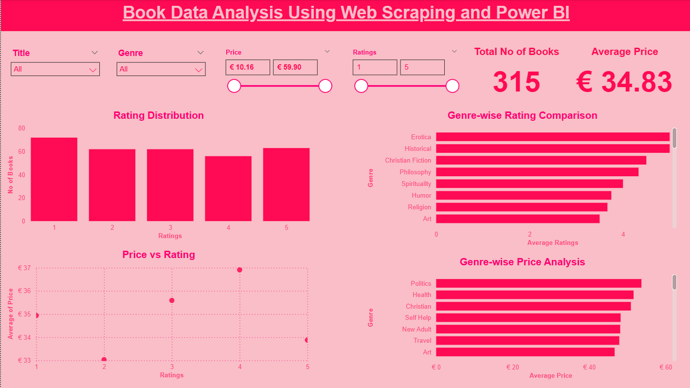
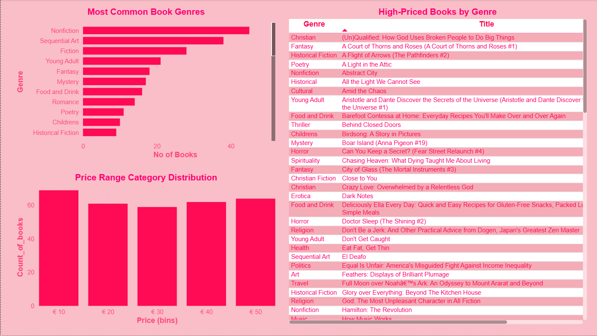

Book Data Analysis Using Web Scraping
and Power BI
Performed an end-to-end data analysis project by scraping data from the website Books to Scrape. Using Python (BeautifulSoup & Requests), I collected book details (title, price, rating, stock availability, and category). The cleaned dataset was further analyzed and visualized in Power BI to uncover pricing patterns, rating distributions, and category insights.
Project Visuals


Data Collection (Web Scraping – BeautifulSoup)
- Scraped 1,000+ books across all categories.
- Extracted details: Title, Price, Rating, Category, Availability.
- Stored scraped data in CSV format for further analysis.
Data Cleaning & Preprocessing (Python – Pandas)
- Converted prices into numeric values (removed currency symbols).
- Mapped star ratings (One → 1, Two → 2, etc.) into numeric scale.
- Handled missing/duplicate entries and standardized categories.
- Created structured dataset → 1,000 clean book records.
Dashboard Creation & Visualization (Power BI)
- 📚 Category-wise analysis of book counts and avg prices.
- ⭐ Rating distribution across categories.
- 💰 Pricing trends – min, max, and average book prices.
- 📦 Stock availability insights across all categories.
Key Insights
- Total books scraped: 1,000+.
- Most expensive category: Science.
- Category with highest avg rating: Philosophy.
- Category with most books: Fiction.
- Avg book price: £35.26.
Skills Demonstrated
- 🐍 Python (BeautifulSoup, Pandas): Web scraping, data cleaning, preprocessing.
- 📊 Power BI: Dashboard creation and interactive storytelling.
- 🔎 Data Analysis: Extracting insights from unstructured web data.
- 📚 Domain Knowledge: E-commerce/bookstore trends.
Note: This project demonstrates my ability to scrape real-world web data, clean and preprocess it, and then transform it into business insights using Power BI.